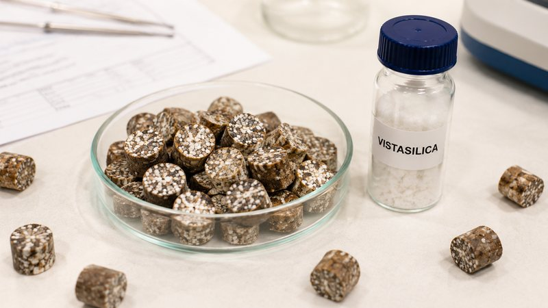

A precipitated silica carrier converts liquid additives to powder through capillary retention in its pore network. Carrier grades with 240-290 g/100g oil absorption (ISO 4652) typically hold 30-50% of their own weight in liquid while staying free-flowing. Anti-caking and carrying are separate functions and usually require two different grades.
Liquid loading depends on internal pore volume, while anti-caking depends on external surface coverage. A carrier grade absorbs choline chloride, vitamin E, enzymes or flavour oils into its pore network by capillary action; the liquid sits inside the particle and the bulk material still pours. Anti-caking works differently: fine silica particles coat the surface of the host powder, physically separating host particles and interrupting the liquid bridges that form when moisture condenses at contact points.
These two mechanisms pull the specification in opposite directions. Carrying rewards high oil absorption and high pore volume, which usually means a larger, more porous particle. Anti-caking rewards a small particle size and a low tapped density, so that a small mass fraction covers a large host surface area. A single grade optimised for one function is normally a compromise for the other, which is why premix plants that use one silica for both jobs tend to over-dose.
Silo caking is a time-and-pressure phenomenon that a mixer test cannot reproduce. Freshly blended premix leaves the mixer aerated and flows well. In a silo, static head compresses the bed, moisture migrates toward temperature gradients at the wall, and dissolved salts such as choline chloride and trace-mineral sulphates recrystallise at particle contact points. Those recrystallised salt bridges are what turn a free-flowing blend into a solid arch six weeks later.
Two specification parameters govern how well silica resists this. Tapped density (ISO 697) indicates how much the coating layer will consolidate under load — a carrier at 140-210 g/L consolidates far less than a dense filler. Loss on drying (ISO 787-2) at 4.0-7.0% indicates residual moisture the silica itself contributes to the system. Free-flow tests run immediately after blending will not reveal either effect; a 4-6 week storage trial under representative load will.
| Property | Unit | VS-C200 Carrier | Test method | Why it matters for premixes |
|---|---|---|---|---|
| Oil absorption (DOP) | g/100g | 240 – 290 | ISO 4652 / DIN 53617 | Sets the maximum liquid load before the powder turns tacky |
| BET specific surface area | m²/g | 170 – 230 | ISO 9277 / DIN 66131 | Drives adsorption of polar liquids and trace-mineral solutions |
| Particle size D50 | µm | 10 – 18 | ISO 13320 | Coarse enough to avoid dusting, fine enough to blend uniformly |
| Tapped density | g/L | 140 – 210 | ISO 697 | Predicts consolidation under silo head pressure |
| Loss on drying (105 °C, 2 h) | % | 4.0 – 7.0 | ISO 787-2 | Residual moisture the carrier contributes to the blend |
| Sieve residue (45 µm) | % | ≤ 0.10 | ISO 2591-1 | Coarse fraction that would segregate out of the premix |
| SiO₂ content (dry basis) | % | ≥ 97.0 | Gravimetric / XRF | Inert fraction; balance is bound water and trace oxides |
Decide whether the immediate problem is liquid loading, storage caking, or both. If a liquid additive is being powdered, start from oil absorption. If a dry blend arches in the silo, start from tapped density and particle size. Specifying one grade for both jobs is the most common cause of over-dosing.
Divide the target liquid percentage by the oil absorption value to get the minimum carrier fraction, then add a working margin. A grade at 240-290 g/100g (ISO 4652) will carry roughly 30-50% of its own weight in liquid while remaining pourable; the exact ceiling depends on the viscosity and polarity of the liquid and must be confirmed on the actual additive.
Choline chloride, trace-mineral sulphates and hygroscopic organic acids drive recrystallisation bridging. Blends dominated by these components need a flow aid with a smaller particle size to achieve surface coverage at a low mass fraction, rather than a higher dosage of a coarse carrier.
Run at least 4-6 weeks under representative bed height and ambient humidity. Measure flow function or arching index at the start and end. A blend that passes a fresh funnel-flow test can still bridge in week five.
Start the trial at the incumbent dosage and step down in defined increments across production runs. Most over-dosing persists because nobody has run the descending series.
System: Premix, bulk silo storage · Grade: VS-FD150
Problem. The incumbent anti-caking agent required 2.0% dosage and the premix still clumped after six weeks in silo storage, costing roughly four hours of dispensing-line downtime per month.
Action. A high-porosity precipitated silica with low tapped density was trialled at 0.8% dosage across three production runs over 90 days.
Result.
The carrier fraction follows from oil absorption. A grade measured at 240-290 g/100g (ISO 4652) holds roughly 30-50% of its own weight in liquid while staying free-flowing, so a 20% liquid load typically needs 40-60% carrier by weight of the liquid phase. Viscous or highly polar additives sit at the lower end and must be confirmed on the actual liquid.
One grade can do both, but rarely at optimum dosage. Carrying rewards high oil absorption and pore volume; anti-caking rewards small particle size and low tapped density. Plants using a single grade for both functions usually run 1.5-2 times the dosage needed by a two-grade approach.
Silo caking is driven by static head, moisture migration and salt recrystallisation at particle contacts, none of which occur in a fresh funnel-flow test. Validation requires a 4-6 week storage trial at representative bed height and humidity, comparing flow function at the start and end of the period.
Related: Feed additives solution overview · Full grade specifications · All articles